Туры по карелии
Территория республики Карелия лежит на северо-западе нашей страны — от Ладожского и Онежского озер до Белого моря. По отзывам туристов, отдых в Карелии мало подходит тем, кто любит отпуск у теплого моря. Несмотря на то что пляжи есть и в Карелии, температура воды в большинстве водоемов даже в разгар лета не поднимается выше +18...+20°С.
В Карелию едут ценители могучих сосняков, любители собирать грибы и ягоды, поклонники рафтинга и сплавов. Сюда приезжают половить рыбу и покататься на лыжах и снегоходах. У туристов популярны поездки на водопады Кивач и Гирвас, в Мраморный каньон, к деревянным храмам Кижей и на остров Валаам.
| Отель | Описание отеля | Цена | |
|---|---|---|---|
| Суоярви | Загородный дом «Дом на озере Суоярви» находится в Суоярви. К услугам гостей частный пляж, патио с видом на озеро, бесплатный Wi-Fi и частная парковка. | 972 BYN | Закзать |
| Comfort Lodge | Лодж Comfort расположен в городе Суоярви. Гости лоджа могут отдохнуть на террасе. Лодж располагает гостиной и полностью оборудованной кухней с духовкой и микроволновой печью. В лодже также имеется 1 ванная комната с душем. К услугам гостей сауна. Гости могут отдохнуть в общем лаундже. | 1945 BYN | Закзать |
| Мини-отель "Комфорт" | Мини-гостиница «Комфорт» находится в городе Суоярви. Гостям предоставляется бесплатный Wi-Fi. Все номера оснащены телевизором со спутниковыми каналами, микроволновой печью и электрическим чайником. Также в распоряжении гостей собственная или общая ванная комната с душем. | 350 BYN | Закзать |
Как добраться до Суоярви?
| Время в пути | Отправление | Прибытие | Цена |
|---|---|---|---|
| 22 ч. 5 мин. | 06:15 | 10:39 следующего дня | 70 BYN |
| Время в пути | Отправление | Прибытие | Цена |
|---|---|---|---|
| 3 ч. 9 мин. | 10:45 | 13:30 следующего дня | 11 BYN |
Фотогалерея
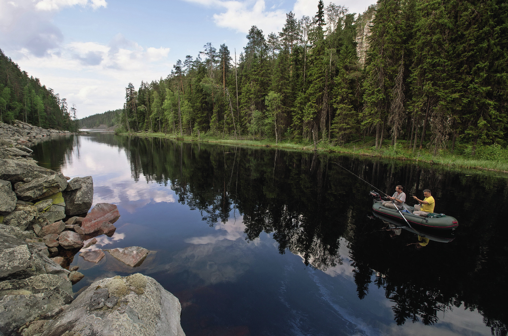
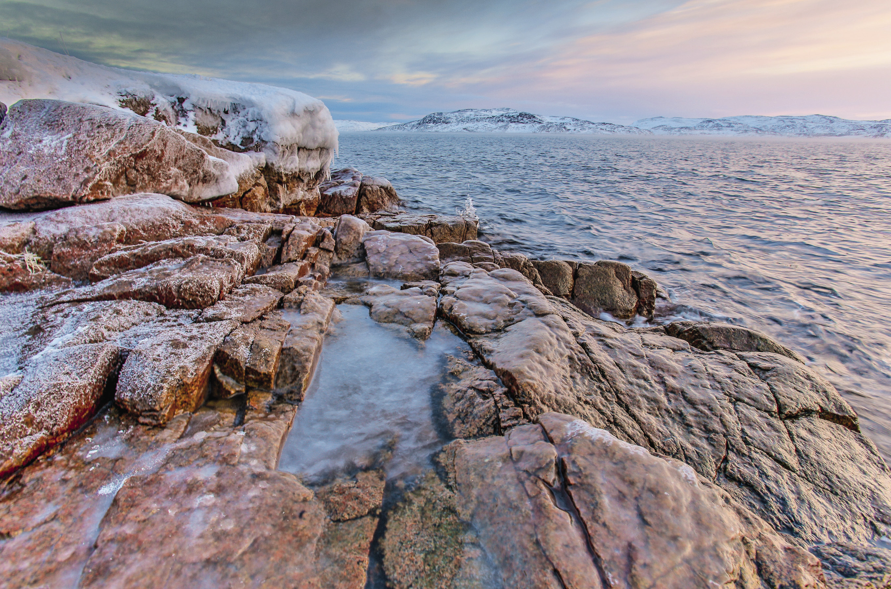
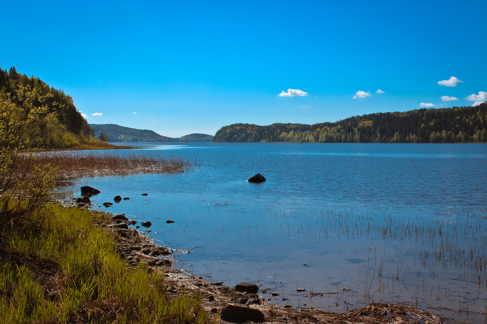

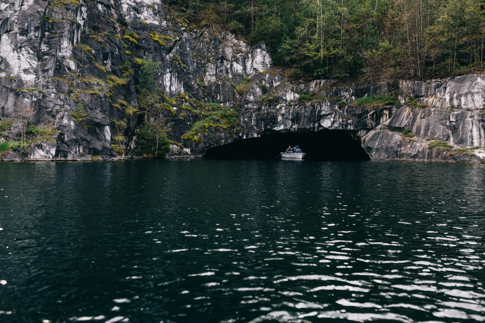
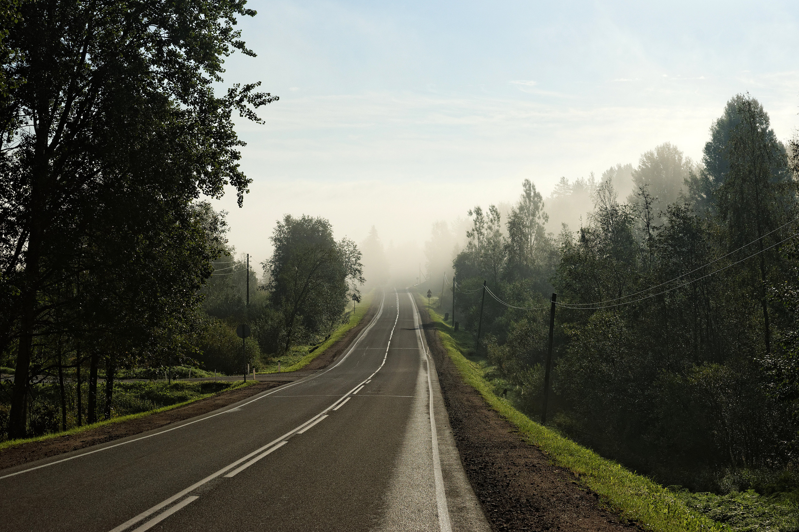
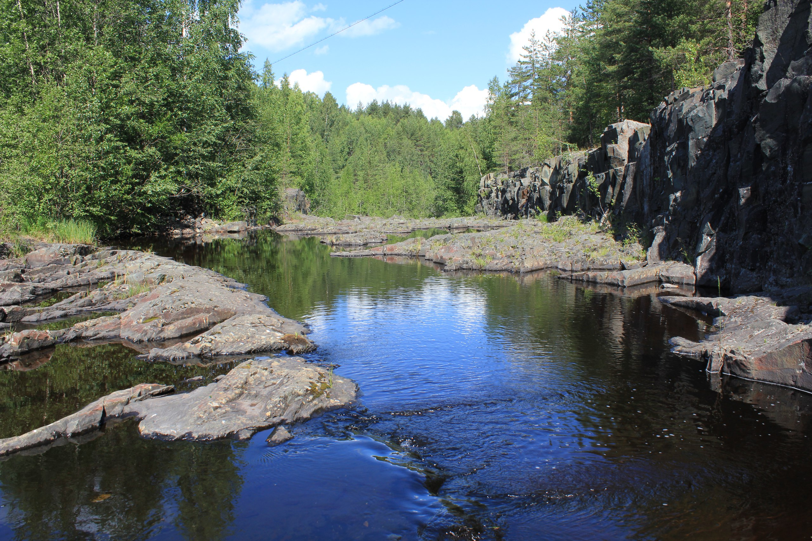
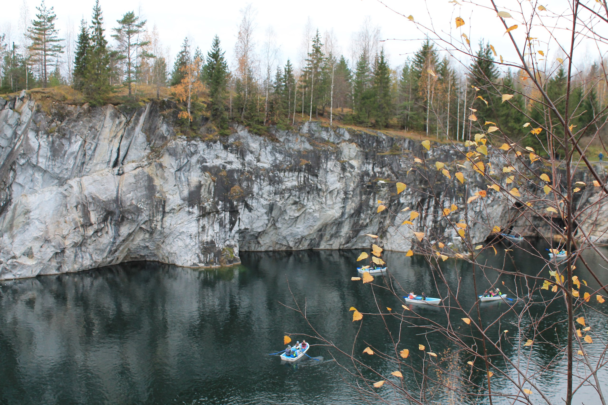
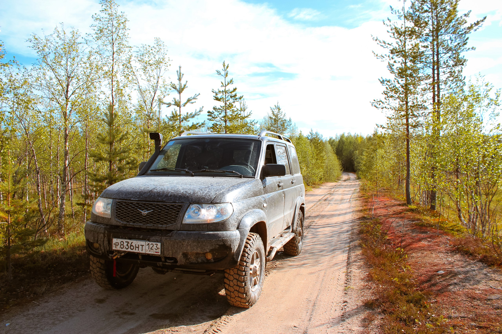
Памятники
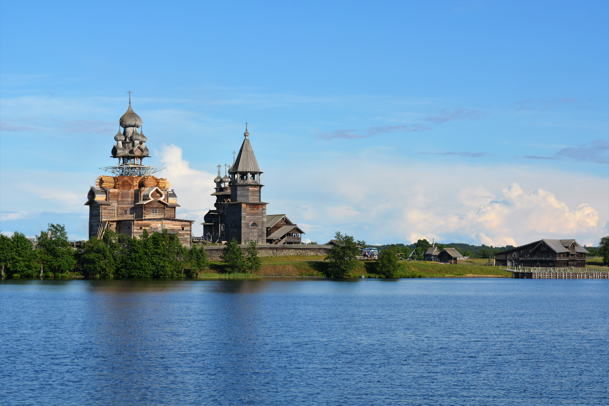
Монастырь "Кижи"more_vert
Монастырь "Кижи"close
Ки́жский пого́ст, Ки́жи(также распространён вариант Кижи́, некоторыми филологами называемый «общепринятым»; карел. Kiži) — архитектурный ансамбль в составе Государственного историко-архитектурного музея «Кижи», расположенный на острове Кижи Онежского озера, состоящий из двух церквей и колокольни XVIII—XIX веков, окружённых единой оградой — реконструкцией традиционных оград погостов. Объект всемирного наследия ЮНЕСКО в России.
По одной из легенд, церковь Преображения Господня якобы была построена одним топором (изначально без гвоздей) плотником Нестором. Плотник выбросил топор в озеро, чтобы никто не смог повторить такую же величественную постройку.
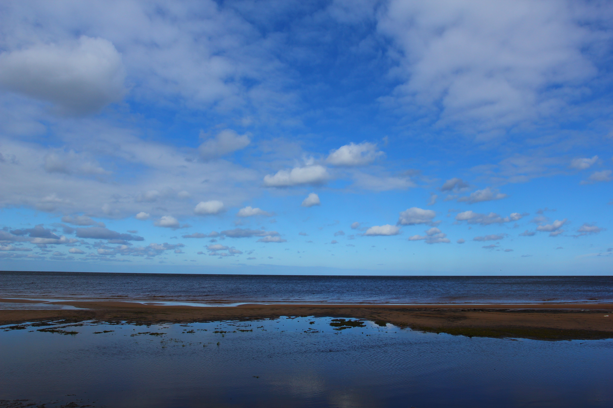
Ладожское озероmore_vert
Ладожское озероclose
Ла́дожское о́зеро (также Ла́дога; в древности — Не́во) — озеро в Республике Карелия (северный и восточный берег) и Ленинградской области (западный, южный и юго-восточный берег), крупнейшее пресноводное озеро в Европе и второе по величине озеро России после Байкала.
Относится к бассейну Балтийского моря Атлантического океана. Площадь озера без островов составляет от 17,87 тысяч км² (с островами 18,3 тысяч км²); объём водной массы — 838 км³; длина с юга на север — 219 км, наибольшая ширина — 125 км. Высота над уровнем моря — 4,84 м. Глубина изменяется неравномерно: в северной части она колеблется от 70 до 230 м, в южной — от 20 до 70 м. На берегах Ладожского озера расположены города Приозерск, Новая Ладога, Шлиссельбург в Ленинградской области, Сортавала, Питкяранта, Лахденпохья в Республике Карелия. В Ладожское озеро впадают не менее 40 рек и крупных ручьёв, а вытекает одна — река Нева. В южной половине озера — три крупных залива: Свирская, Волховская и Шлиссельбургская губы.
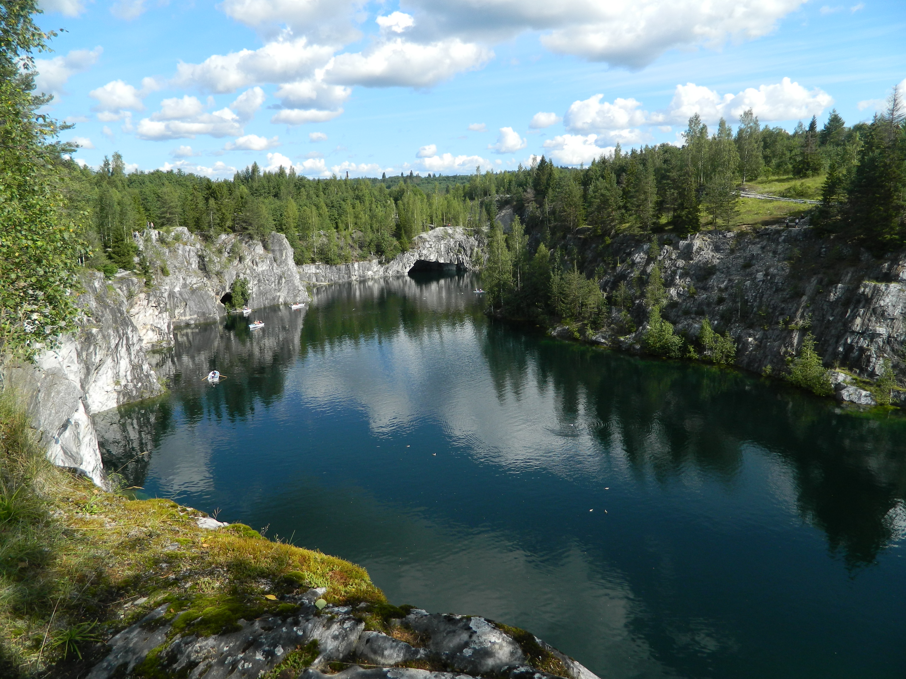
Рускеалаmore_vert
Рускеалаclose
Го́рный парк «Рускеа́ла» (фин. Ruskeala — «Коричневая, Бурая») — туристический комплекс, расположенный в Сортавальском районе Республики Карелия. Основой комплекса является объект культурного наследия, памятник истории — заполненный грунтовыми водами бывший мраморный карьер.
Протяжённость карьера с севера на юг составляет 460 метров, ширина — до 100 метров. Расстояние от самой верхней точки борта карьера до его дна — свыше 50 метров. Прозрачность воды достигает 15-18 метров.
Стены старого карьера пронизаны целой системой подземных выработок — штолен и штреков, соединенных вертикальными шахтами. Большая часть выработок после Великой Отечественной войны оказались затоплены; откачать воду не представляется возможным. Общая протяжённость горных выработок составляет несколько километров. Сохранилось здание заводоуправления, сложенное из небольших мраморных блоков, и часть печей для обжига извести.